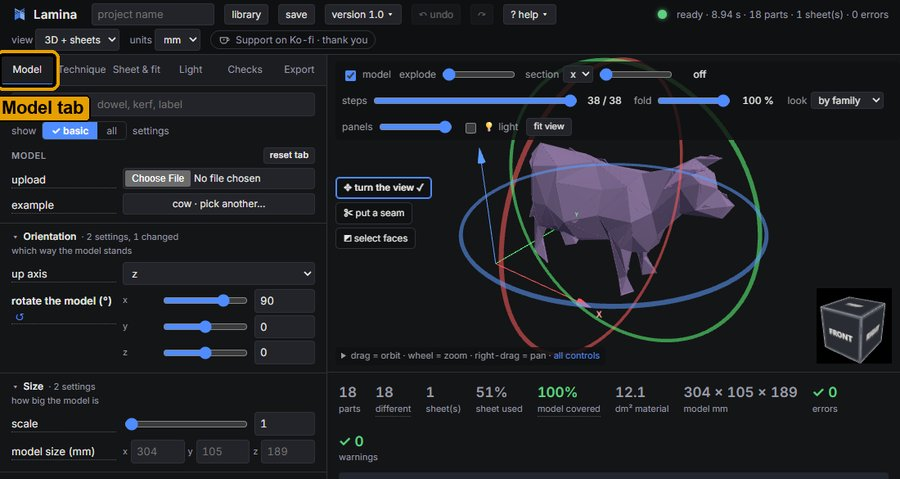
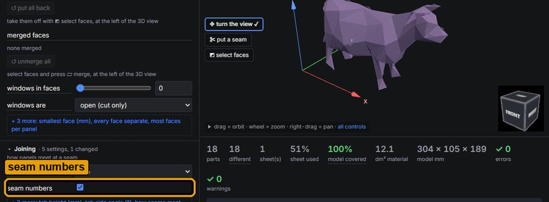
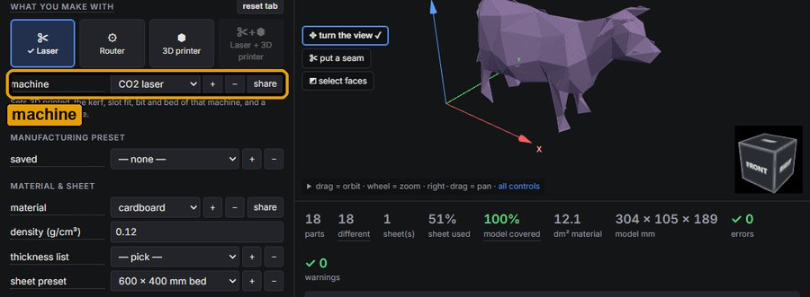
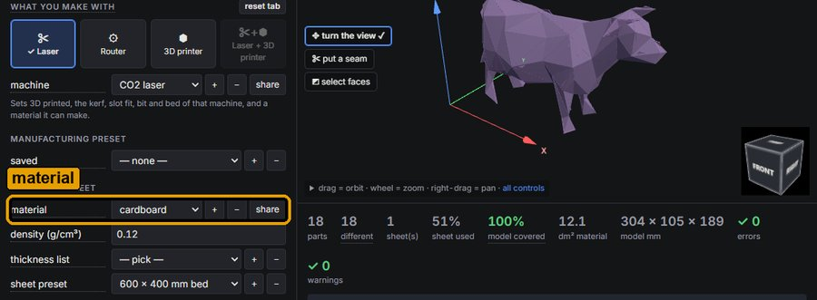
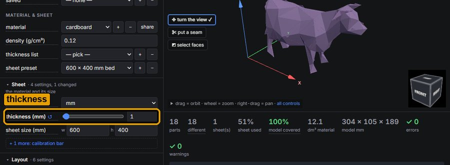
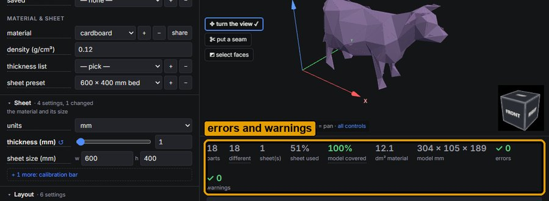
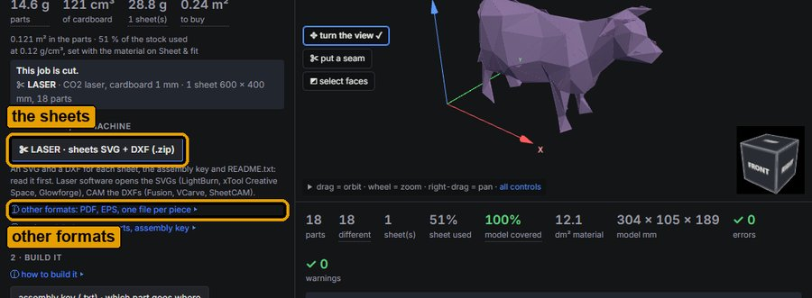
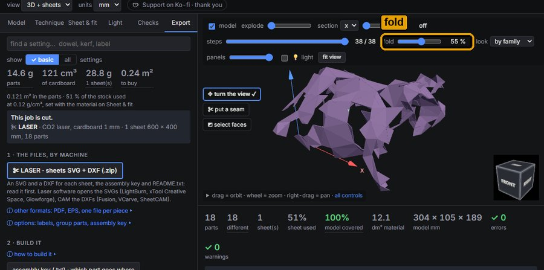
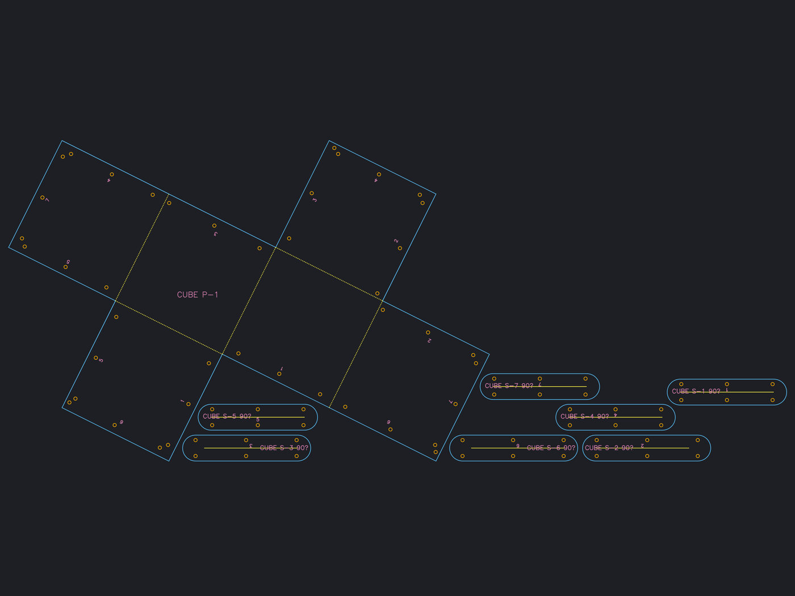
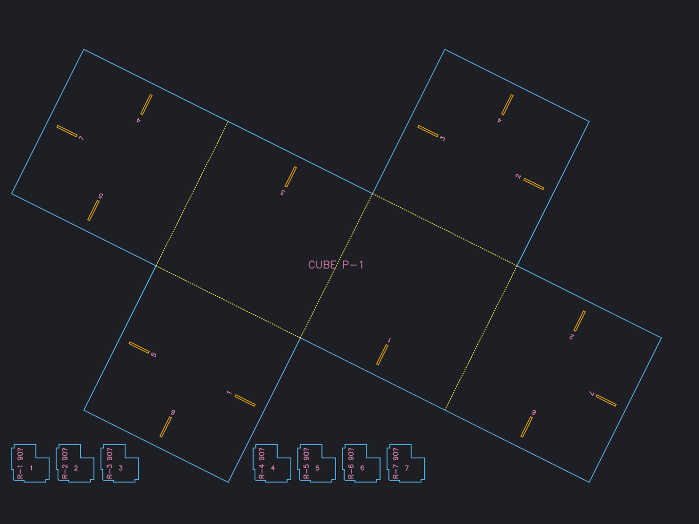

Papercraft from a 3D model: unfold it into flat panels
Lamina simplifies the surface of a model to the facet size you choose and unfolds it into flat panels with score lines. You cut the panels, fold them on the lines and join the seams. It makes papercraft nets, as Pepakura does, and also joints for cardboard, leather, cloth and sheet metal. Lamina is free and runs in your browser.
Steps
The pictures show the cow from the video above, the example the link opens. Each picture shows the app at that step. An orange ring with a label marks the control to use.
- Open Lamina on Folded Panels. It opens on the Model tab, with
the cow example unfolded into panels.

- In upload, choose your model file. A low-poly model with large faces is the easiest to fold.

- In model size (mm), type the height of the finished piece in the z box. The x and
y boxes follow.

- On the Technique tab, set face size. Larger faces give fewer, simpler panels that are easier to
fold.

- In joint, pick how the seams join. The joints are listed below.

- On the Sheet & fit tab, under What you make with, click Laser. It also covers
knife cutters and cutting by hand.

- In machine, pick your machine: a laser, a knife cutter such as a Cricut, or by hand.

- In material, pick paper, card or the sheet you fold. A sheet too thick to fold, such as plywood or
acrylic, gets a warning.

- In thickness (mm), type the thickness of your sheet.

- Read the errors and warnings under the 3D view. Correct every error before you cut. The buttons
under a message fix it.

- On the Export tab, click LASER · sheets SVG + DXF (.zip). To print the sheets and cut them by
hand, open other formats and click PDF.

- Fold the panels on the score lines and join the seams. With seam numbers on, both panels of a seam
carry the same number. To see the panels fold up, drag fold over the 3D view.

Panels grow until they would overlap themselves or run off the sheet. Lamina also unfolds open surfaces, such as a mask or a clothing pattern. For a shape with deep hollows, separate mode cuts every face alone.
Fifteen joints
Glue tabs for paper and card. Laces and rivets for leather and cloth. Strips for cardboard. Slotted angle ribs for sheet metal. And more: tongues, puzzle tabs, loops and others, each with its own sizes. For printed panels, click and snap close the seams without glue.

Glue tabs
paper and card

Laces
leather and cloth

Strips
cardboard

Angle ribs
sheet metal and thick sheet
All of them are on the main page.
Seams where you want them
Lamina places the seams for you. To choose them yourself, use the put a seam tool of the 3D view: click an edge, or drag along edges. The sheet is cut apart there, and the panels are laid out round your seams.
Paper lamps
Add windows to the panels, then set windows are to closed with paper: you get a paper part for each window, or a thin printed layer. Merge makes faces one flat face. Try the example paper_lamp, a lantern of twelve dodecahedra. The Light tab shows the glow before you cut.

Print it flat, fold it up
With PLA or PETG as the material, a panel prints at its full thickness with a V groove along every fold. The thin skin at the bottom of the groove is the hinge, and the fold stops at the model's shape. Add windows for a lamp shade. Try the examples fold_test and fold_lamp.
Keep only a part: a mask
Put a seam round the back of a head, select the back with one click and remove it. Only the mask is cut: the face with its whole mane. Try the example lion_head.